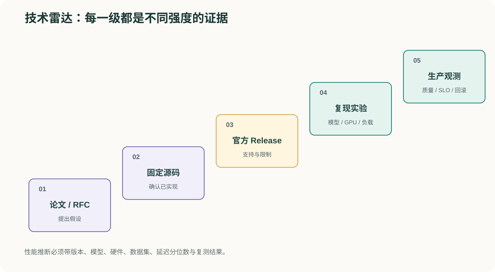

第 26 章 · 研究与工程能力
Inference Systems Roadmap：怎样判断技术成熟度？
用官方 release、代码、论文与可复现数据解释推理系统的演进方向，而不是预测一个没有证据的功能排行榜。
研究进展很快，但工程决策不能仅凭一条论文摘要或发布视频。本章把方法放在未来预测之前：比较算法证据、实现状态、版本稳定性、真实硬件负载和回滚条件，建立可以长期维护的技术雷达。
学习目标
- 区分论文原型、源码实现、官方支持与生产验证。
- 识别解码、KV、MoE、多模态和请求编排的研究问题。
- 复查 release notes 和兼容性差异。
- 建立风险可控的探索、测量与回滚路径。

26.1 为什么“最新功能”不是生产选型理由
部署团队关心可复现的 质量 × 延迟 × 吞吐 × 成本 × 故障风险；研究团队关心新算法是否在定义清楚的工作负载上突破限制。同一种功能在论文、原型、特定模型路径和稳定发布中的状态可能完全不同。版本变化是需要审计的事实，不是产品宣传语。
本章不把研究中的 P-EAGLE、下一代 Model Runner 或某个特定 Accelerator 方案称为“已是生产默认功能”；这些术语在不同提交和配置下的含义可能变动。我们采用官方文档、release、代码、benchmark 四级证据判定。
26.2 用证据阶梯给技术打标签
| 证据等级 | 可以支持什么陈述 | 仍需验证什么 |
|---|---|---|
| 论文 / RFC | 算法思想、实验条件下的观察 | 是否已合并、是否普遍兼容 |
| PR / 源码 | 某 commit 已有实现/接口 | 功能是否默认启用，边界是否稳定 |
| 官方文档 / Release | 该版本公开支持的功能和限制 | 模型 × 硬件组合的真实结果 |
| 复现报告 | 一组确定条件下的正确性/性能 | 扩展至其他业务负载的外推风险 |
| 生产观测 | 真实请求下的 SLO 与故障情况 | 业务变化、长期维护与回滚 |
例：某个 speculative method 在论文中取得加速，不等于当前 vLLM 在任何模型上都可以启用。必须检查当前 SpeculativeConfig、checkpoint 兼容、TP/PP 组合、目标分布保持语义和基准复现。对于兼容性不确定的功能，应标为“待验证”，而非“未来必然会实现”。
26.3 五条值得持续观察的研究方向
- Decode 加速：Speculative Decoding、MTP、EAGLE 与动态接受策略，在低并发与高并发时的收益边界不同。
- 长上下文与内存：Prefix Cache、KV Offloading、分层/混合 Attention 缓存与压缩。在输出质量、复用率、显存与 CPU/网络代价间平衡。
- 分布式与 MoE：TP/PP/DP/EP 组合、All-to-All、expert load balancing、Prefill/Decode disaggregation 与跨节点传输。
- 异构和多模态：视觉 Encoder、音频视频、不同 GPU/加速器的 kernel 和 compiler 组合，探索更严格的资源预算。
- 生产编排：Cache-aware routing、负载感知路由、请求 admission、性能与安全观测；多租户共享 Cache 还要考虑隔离。
这些是研究与工程关注方向，不是统一功能 roadmap，也不代表全部已经成为稳定默认能力。核验时回到第 09、12、16、17、19–22 章所建立的原理与指标。
26.4 技术候选的审查问卷
每当看到“性能提升 X%”的新闻或博文，先答六个问题：
- 研究或项目对应哪个 Git commit、release 和日期？
- 比较对象是不是同一个模型、精度、GPU、Token 分布和请求到达率？
- 结论讨论的是 TTFT、TPOT、输出 tok/s，还是成功请求的 Goodput？
- 是否保持生成质量/采样分布？关闭或简化哪些功能才得到提升？
- 用到哪些只在特定模型/硬件受支持的 Kernel/Backend？
- 配置若出问题，能否自动/人工回滚？现网观测如何判断收益？
反例：某实现使用热 Prefix Cache 且 Prompt 高度重复，另一个实现是冷缓存；这不是公平的“引擎快慢”对比。第 25 章可用于重构正确的 Benchmark 条件。
26.5 建立可重复的版本追踪机制
建议以“候选—证据—实验—决策”四列维护一个简短更新表，而不是不停追加未证实的功能名。一个工作周只选择少数与业务相关的变化：记录 release notes、对应 PR 和受影响 API，检查 AGENTS.md、课程 evidence 和示例命令是否有版本漂移。
# 只读本地查询，用于核对安装的 vLLM 版本
python -c "import vllm; print(vllm.__version__)"
# 代码审查时记录 model revision、image digest 与 Git SHA
# 比对某个 release 的官方 changelog 与对应 diff 后再设计回归实验
始终维护稳定基线；新特性先在小流量或离线 Benchmark 中验证正确性与回滚，随后在真实负载下复查 P95/P99 与错误率。在没有访问到模型与 GPU 的场景下，本章不生成任何伪造的趋势排名或性能预测数字。
本章自检
- 一项研究特性如何从论文结果变成可安全上线的生产功能？
- 为什么不能把不同模型、硬件与缓存条件下的 Benchmark 放入同一榜单？
- 如何从 vLLM release notes 找到潜在兼容破坏？
- 为什么更复杂的推理功能不一定优于简单的高质量服务？
权威资料与证据入口
- vLLM Releases：查版本发布、变更与兼容性说明
- Speculative Decoding：方法边界与标准拒绝采样保证
- Architecture Overview：V1 架构与调度器
- Multimodal Inputs：设备/模型特定支持
- Benchmark CLI：可复现负载与测量边界
- vLLM fixed source：固定提交的实际实现
vLLM 上游审校基线：e72fc9ae50c221180c4b8f4a94c5009714a4b199；日期 2026-11-22。发展趋势和第三方技术应随版本重新核验。